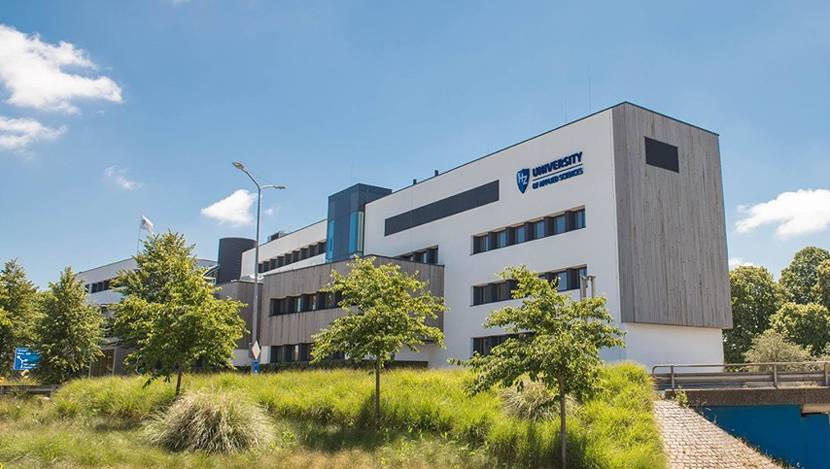

Right now I'm in the ICT programm. But this wasn't my plan one year ago. Because I was really good with numbers and maths it was a logical decision to go and do a course that included economics.
But because I wasnt sure about my choise I decided that it was still possible to change directions.
I visited alot of different studies to see if I would like it. My main problem was that I liked to many on different subjects. So after all I decided to go and do the Finance and Control study and the hz. But when I was going to sign up I decided to go and take a look at ICT ever since I hadn't been to the introduction day.
So I found out that I liked ICT better then finance and control ever since that would get boring after a while, because off all the repeating
Starting the ICT programm is also a big guess ever since I didn't have any experience coding.
The good thing about doing the ICT studies instead off the finance and control study is my travel time, bacuse the ICT is in Middelburg and the finance and control is in Vlissingen.
For now I'm not sure yet what I want to do when I finished the studies, because maybe I want to go and study again but at a higher level. But if a good job comes my way I might take it for granted and go work.
